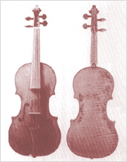
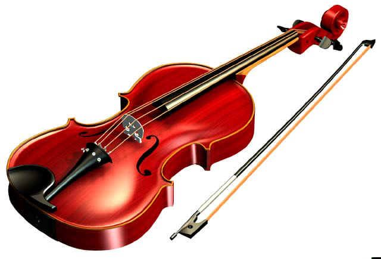

VIOLIN
Violin, byname fiddle, bowed stringed musical instrument that evolved during the Renaissance from earlier bowed instruments: the medieval fiddle; its 16th-century Italian offshoot, the lira da braccio; and the rebec. The violin is probably the best known and most widely distributed musical instrument in the world.
The violin has a fretless fingerboard and the strings are hitched to tuning pegs and to a tailpiece passing over a bridge held in place by the pressure of the strings. The bridge transmits the strings’ vibrations to the violin belly or soundboard, which is made of pine and amplifies the sound. Inside the instrument, beneath the treble foot of the bridge and wedged between the violin belly and back, which is made of maple, is the sound post, a thin stick of pine that transmits the string vibrations to the instrument’s back, contributing to the characteristic violin tone. The belly is supported from beneath by the bass bar, a narrow wood bar running lengthwise and tapering into the belly. The sidewalls, or ribs, are constructed of pine-lined maple.
The violin was early recognized for its singing tone, especially in Italy, its birthplace, where the earliest makers—Gasparo da Salò, Andrea Amati, and Giovanni Paolo Maggini—had settled its average proportions before the end of the 16th century. The earlier violins are more deeply arched in the belly and back; the more modern, following the innovations of Antonio Stradivari, are shallower, yielding a more virile tone. In the 19th century, with the advent of large auditoriums and the violin virtuoso, the violin underwent its last changes in design. The bridge was heightened, the sound post and bass bar were thickened, and the body became flatter. The neck was angled back, giving greater pressure of the strings on the bridge. The result was a stronger, more brilliant tone in place of the delicate, intimate tone of the violin of the 18th century.